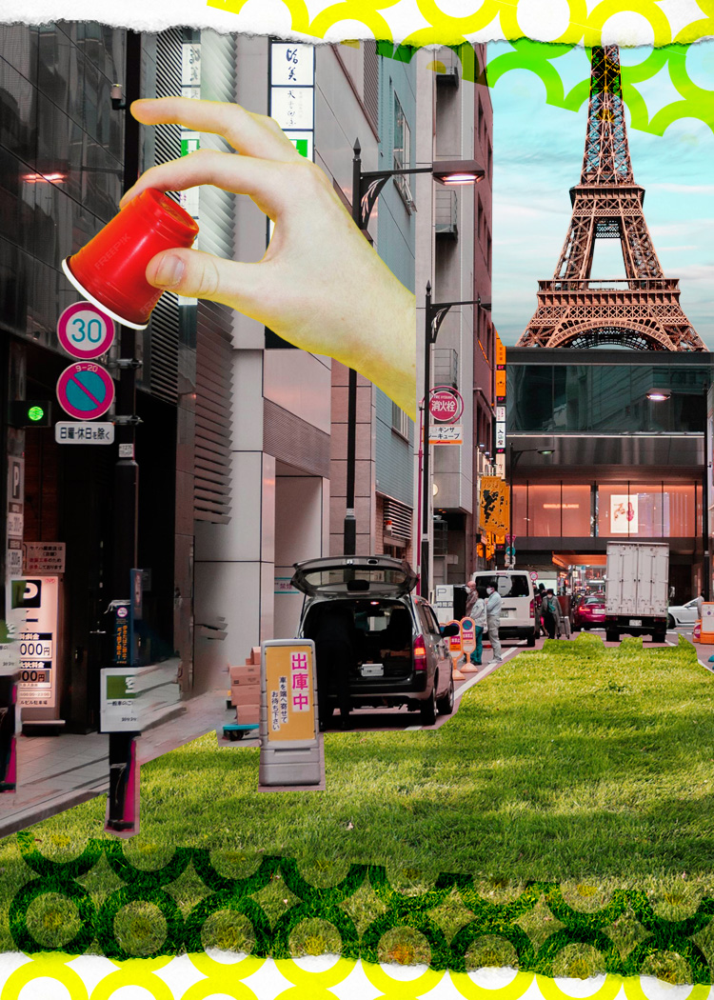

Shape and Complementary color 1
Photo 1 with Shape and Complementary Color

To create more my dynamic to my photomontage, I decided to add more green to create the layer of natural feeling to the photo. I played with the basic adjustments like adjusted brightness and Contrast, also Levels and Hue/Saturation and add the transparency to the element which I would say that it blended very well with the element that I had in the original photo. I also love the color of Red, Yellow and Green that bring the photo more colorful and asthetic.
Shape and Complemenntary Color 2
Photo 2 with Shape and Complementary Color

This photomontage is the most favorite pieces of all time. This one is like my masterpieces that I really impressed with the details and I did really enjoyed with the process of making it as well. To create more variety of the photo I use the circle element for illustrator and put it in the back of the main character in the photo to create the cloudy vibe as a cloud at the back and front. I also put this photo in my currently Iphone lockscreen as well.